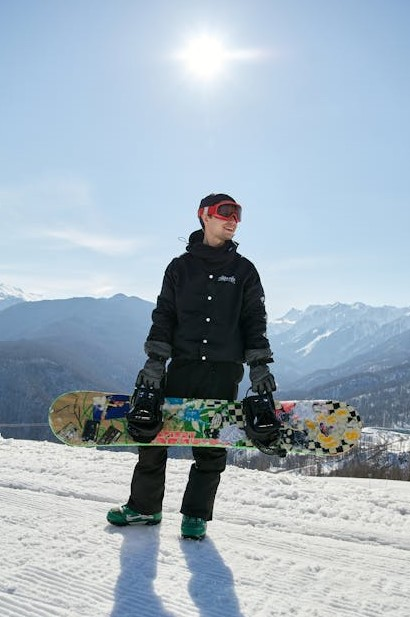

About Lucas Snow:

Lucas Snow is a passionate advocate for snow sports, dedicated to sharing the thrill and beauty of winter adventures with the world. His love for skiing, snowboarding,
and exploring pristine snow-covered landscapes drives him to seek out new experiences and connect with fellow enthusiasts. Through his storytelling, he aims to inspire others
to discover the joys of winter sports, whether they are seasoned athletes or curious newcomers. Lucas believes that every snowy slope offers a
unique opportunity for adventure and connection, and he invites everyone to join him in celebrating the exhilarating world of snow sports.